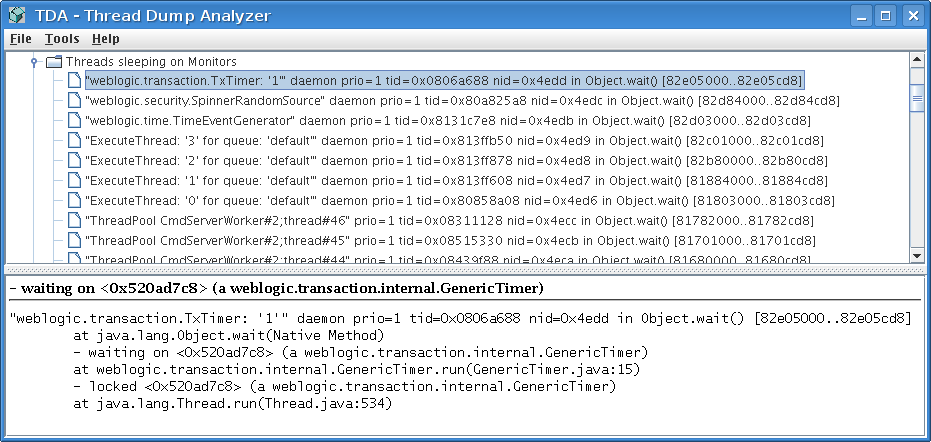

This is a short tutorial on how to use the TDA Thread Dump Analyzer. TDA parses your log files and displays all found thread dumps and class histograms reported from a Sun JVM >= 1.4.x. Class Histograms are not included into the thread dumps by default but need a special JVM-Flag to be dumped with the thread dump. Note: There is a bug in 1.5 preventing the class histogram to be printed if any other then the concurrent mark sweep gc is used.
For having the class histograms included you need to provide the -XX:+PrintClassHistogram option.
Open the log file you want to analyse, TDA will search for all thread dumps in this log file and displays them in a tree. As the Sun JVM thread dump lacks any date information when the dump was requested, you can provide a regular expression in the Preferences which is then used for parsing the lines before the thread dump to get a time stamp.
For each thread dump TDA sums up all found threads and all monitors found in the threads, it also groups threads waiting on, for and locking threads.

If you want to focus on lock found in a thread you can just mark it, expand the Monitor node of the thread dump and right-click on it and select the tree-search. Paste the marked monitor into the search dialog to get to the information about this monitor. You will get all waiting and all locking threads. Starting here you can easily see if a thread is hanging and holding lock which a lot of other threads are waiting for.